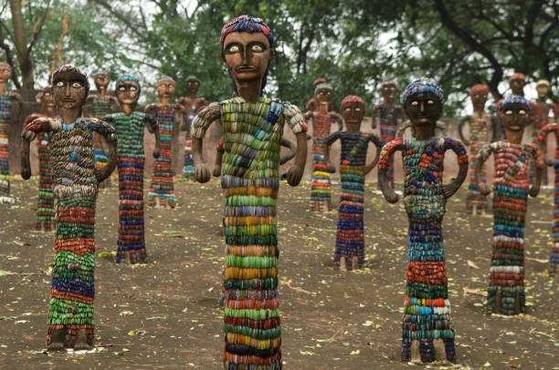
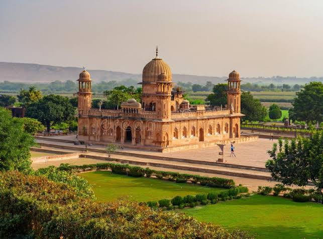
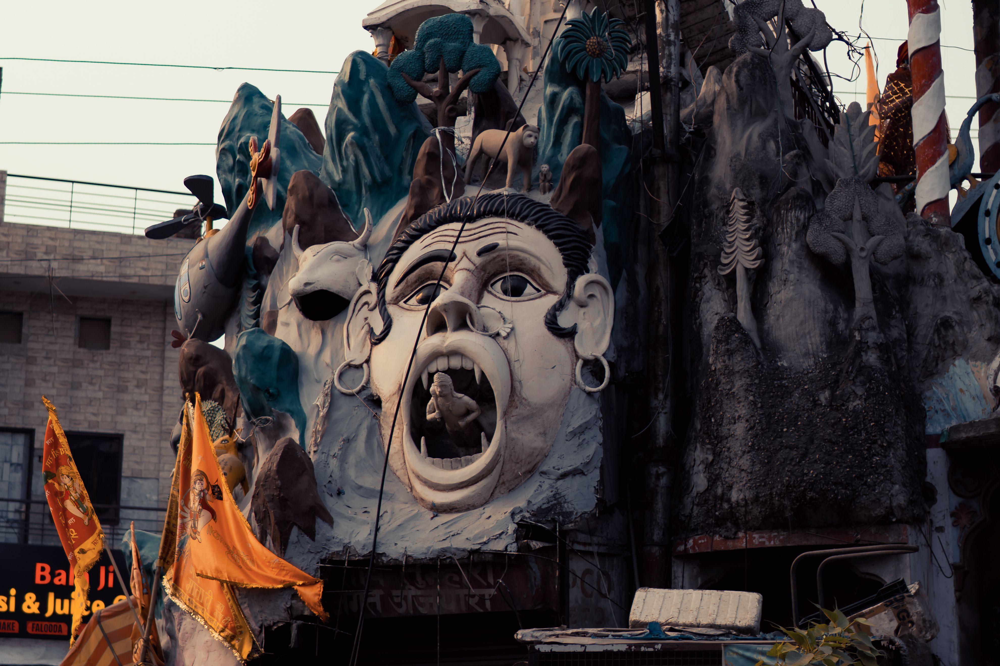
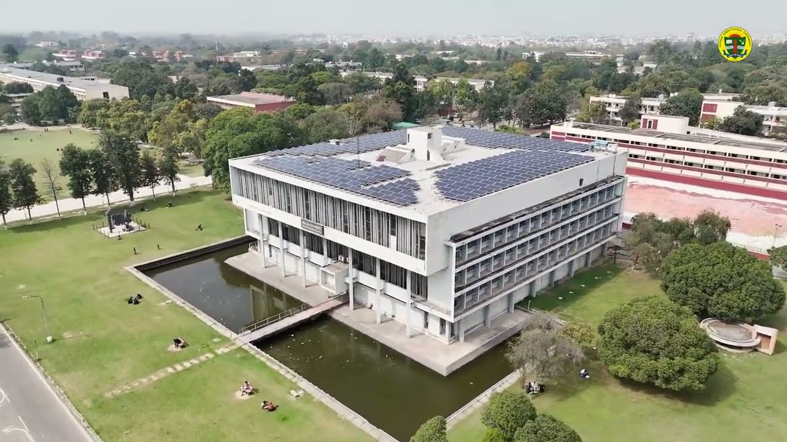
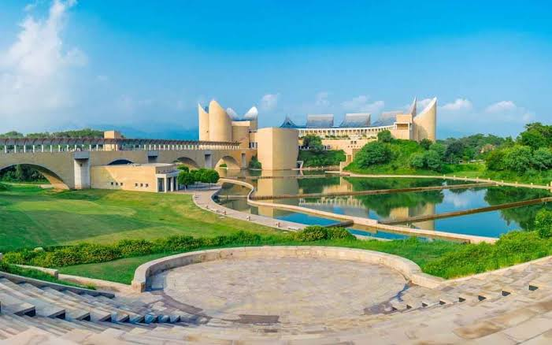
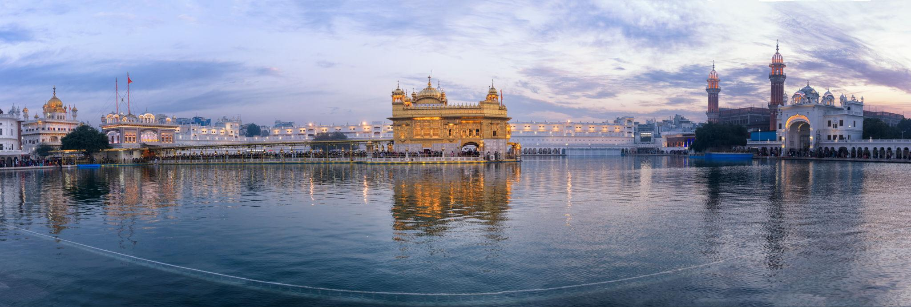
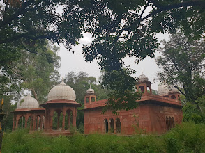

Anandpur Sahib

Attari - Wagah Border

Baradari Gardens, Patiala

Bathinda City View

Capitol Complex, Chandigarh

Open Hand Monument, Chandigarh

Clock Tower (Ghanta Ghar), Ludhiana

Gurdwara Fatehgarh Sahib

Gobindgarh Fort, Amritsar

Hardy's World, Ludhiana

Jallianwala Bagh Memorial, Amritsar

Jhajjar Bachauli Sanctuary

Kapurthala Heritage

Kathlour-Kushlian Sanctuary, Pathankot

Ludhiana Metropolitan

Mohali City Skyline

Maharaja Ranjit Singh War Museum

Moti Bagh Palace, Patiala

Mukteshwar Mahadev Mandir, Pathankot

Nek Chand's Rock Garden, Chandigarh

Punjab Agricultural University, Ludhiana

Panch Mandir, Kapurthala

Pathankot Hills & Valley

Patiala Heritage

Qila Mubarak, Patiala

Ropar Archaeological Museum

Ropar Wetland

Ropar Sutlej River

Sheesh Mahal, Patiala

Siswan Dam, Mohali

Sri Guru Teg Bahadur Sikh Museum

Sukhna Lake, Chandigarh

Takht Sri Kesgarh Sahib, Anandpur Sahib

Virasat-e-Khalsa, Anandpur Sahib

Indus Valley Site, Ropar

Gurudwara Sri Bhatha Sahib, Ropar

Zakir Hussain Rose Garden, Chandigarh

Aam Khas Bagh, Fatehgarh Sahib

Historic Amritsar City

Baba Banda Singh Bahadur Memorial, Mohali

Bathinda Lake

I.S. Bindra Cricket Stadium, Mohali

Shalimar Gardens, Kapurthala

Gurdwara Amb Sahib, Mohali

Gurudwara Jyoti Swaroop Sahib

Moorish Mosque, Kapurthala

Quila Mubarak, Bathinda

Ranjit Sagar Dam, Pathankot

Rose Garden, Bathinda

Sanghol Archaeological Stupa

Shahpurkandi Fort, Pathankot

Sri Harmandir Sahib (Golden Temple)

Takht Sri Damdama Sahib, Bathinda